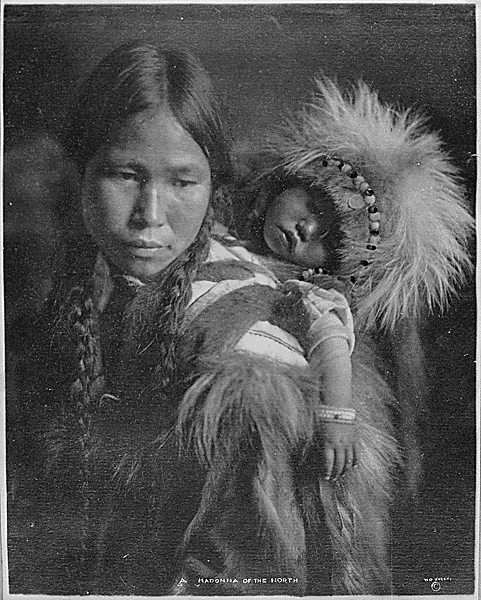

Return to Home
The Lenni Lenape
- The Lenni Lenape Native Americans were the first known organized inhabitants of this area
- Their villages were known to be in the Wickatunk and Crawford's Corner sections of the township
- Some Lenape starved to death as a result of animal over-harvesting, while others were forced to trade their land for goods such as clothing and food.
- They first moved to the only Indian Reservation
- More European influence was present in New Jersey
- Native influence was becoming more secondhand
